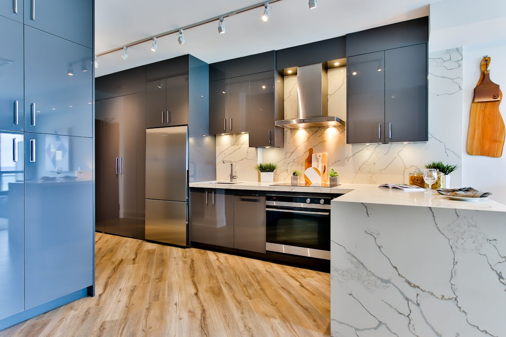

Kenmore Refrigerator, Washer, Dryer & Dishwasher Repair in Orange County
Kenmore is a badge, not a factory, and knowing who really built your unit is half the repair. We read the model number, identify the actual manufacturer, and bring the right part the first time. Same-day service available.
5.0 · 156 Google reviewsMon–Sat, 8am–7pm.

What to expect
- Flat $99 diagnostic feeApplied toward the repair if you approve the work.
- Written quote firstItemized, before any work starts.
- 90-day parts, 30-day laborWarranty on every repair.
- Same-day serviceCall or request online.
Family-owned since 2017 · Licensed, bonded & insured
What Orange County Customers Say
From our 156 verified 5-star Google reviews
Water leak problem. AG fixed. Thank you!
He fixed the washing machine 👍
New oven install. Great price. Thanks
From Call to Fixed: How a Kenmore Repair Works
Here is exactly what happens from your first call to a fully working Kenmore appliance.
Request a RepairCall or Request Online
Reach us at (949) 629-5365 or submit the contact form. Read us the model number off the data plate and describe the symptom, and we schedule you the same day when possible.Identify the Real Manufacturer
Before anything else, we confirm from the model plate whether your Kenmore is a Whirlpool, LG, GE, or Frigidaire build, so the technician arrives already knowing which parts and platform to expect.On-Site Diagnosis & Upfront Quote
A technician tests the exact component to confirm the fault, then gives you a clear, itemized quote before starting. The $99 diagnostic fee is credited toward the repair if you proceed.Repair & Warranty
Because we cross-reference the Kenmore part number to the manufacturer's own part before we arrive whenever possible, most repairs finish the same day. Every repair carries a 90-day parts and 30-day labor warranty: if the same problem returns within 30 days, we come back at no charge.
Pricing & Discounts
- $99 diagnostic fee: applied toward your repair when you approve the work. If you decide not to proceed, the $99 covers the visit.
- Multi-unit visits: first unit $99, each additional unit on the same visit $49.
- 20% off labor for repeat customers and seniors 60+ (cannot combine with other offers).
Estimates vary by brand, part availability, and diagnosis. Final quote is provided before repair. See full pricing guide
- Applied toward the repair when you approve the work
- Itemized written quote before any work starts
- You decide whether to proceed
Every Kenmore Appliance We Repair
Kenmore sold for decades through Sears, so Orange County kitchens and laundry rooms still run a lot of them. We repair the full lineup, and the first thing we do on every job is confirm which manufacturer actually built the unit.
- Kenmore Refrigerators
- Top-freezer, side-by-side, and French-door refrigerators. Not cooling, running constantly, ice maker faults, and water dispenser leaks. Once we identify the manufacturer behind the badge, we source the correct evaporator fan, defrost heater, or control board.
- Kenmore Washers & Dryers
- Top-load and front-load washers, electric and gas dryers. Not spinning, not draining, not heating, and drum noise. Belt, motor coupler, heating element, and igniter faults are all common depending on which platform your model is built on.
- Kenmore Dishwashers
- Standing water, poor cleaning, and control-panel faults. Drain pumps, wash impellers, and touchpad boards vary by the manufacturer behind the model, so we confirm the platform before we order a part.
- Kenmore Ranges & Ovens
- Gas and electric ranges and wall ovens. Igniters that won't light, bake elements that fail, and temperature drift. We meter the exact component before quoting, once we know which manufacturer's electrical architecture we're working with.
What Actually Breaks on a Kenmore, and Why the Parts Differ
The symptom is ordinary. What differs is which parts the repair needs, because that depends on who actually built the unit behind the Kenmore badge. These are the calls we get most often on Orange County Kenmores.
- Refrigerator Not Cooling
- A Kenmore fridge that runs but will not hold temperature usually comes down to a failed evaporator fan, a defrost system that has let the coils ice over, or a sealed-system fault. The symptom is the same whoever built it; the parts are not. We read the model prefix off the plate before we order anything, so the part that arrives is the one your unit actually takes.
- Washer Will Not Drain or Spin
- Clothes sitting in standing water at the end of a cycle points at a blocked drain pump, a failed lid switch or door lock, or a control fault that never advances the cycle. We clear and test the pump, confirm the lid or door circuit, and run a full cycle before we call it done rather than stopping at the first thing we find.
- Dryer Not Heating
- A Kenmore dryer that tumbles but blows cold has usually lost its heating element, thermal fuse, or thermostat, and a blocked vent is what killed the fuse in a good share of the cases we see. We check the vent run as part of the job, because replacing the fuse without clearing the restriction just books you a second visit.
- Dishwasher Will Not Drain
- Standing water in the bottom is normally a clogged drain pump, a blocked filter or sump, or a kinked drain hose behind the unit. We clear the blockage, confirm the pump moves water under load, and check the air gap and disposer connection under the sink, which is where the actual obstruction sits more often than people expect.
- Oven Not Heating or Heating Unevenly
- On a gas Kenmore this is usually a worn igniter that no longer draws enough current to open the gas valve. On an electric one it is more often a broken bake or broil element or a temperature sensor that has drifted. We meter the part rather than swapping it on a guess, so you are not paying for a component that was fine.
- Ice Maker Not Producing
- No ice, or a slow trickle, generally traces to a frozen fill tube, a failed water inlet valve, a clogged filter, or the ice maker module itself. We test the valve and the fill line before condemning the module, because the module is the expensive part and it is frequently not the one at fault.
Who Actually Makes Your Kenmore?
Kenmore is a brand name, not a factory. Sears never built its own appliances; it put the Kenmore badge on machines made under contract by Whirlpool, LG, GE, Frigidaire and others. Since Sears' 2018 bankruptcy the brand has belonged to Transformco, and Kenmore units now sell through Amazon and Lowe's rather than only through Sears stores. Whatever the badge says, the appliance in your kitchen was built by one of those manufacturers.
That is why the model number matters more on a Kenmore than on any other brand. The first three digits, the part before the decimal point, identify who actually built it. A Kenmore washer whose model number starts 110 is a Whirlpool underneath. Same badge, different machine, different parts.
| Model prefix | Actually built by |
|---|---|
| 106 | Whirlpool (refrigerators) |
| 110 | Whirlpool (laundry, dishwashers) |
| 198 | Whirlpool (freezers) |
| 665 | Whirlpool (dishwashers, ranges, wall ovens) |
| 253 | Frigidaire / Electrolux (refrigerators) |
| 363 | GE (refrigerators, dishwashers, microwaves) |
| 795 | LG (refrigerators) |
These are the prefixes we see most often in Orange County homes, checked against technician reference charts current in 2026. The prefix lists circulating online do not all agree with each other, so we confirm the manufacturer from the model plate before ordering any part. Read us the number off the plate when you call and we will tell you what you actually own.
Once we know the real manufacturer, parts stop being the hard part. There is no such thing as a Kenmore parts catalog: a Kenmore water filter 46-9908 is a Whirlpool 4396508, and 46-9890 is an LG LT500P. We cross-reference the Kenmore number to the manufacturer's own part and order that one. Skipping that step is the single most common reason a Kenmore repair turns into a second visit.
Kenmore Repair Costs: What to Expect in Orange County
Because Kenmore appliances are built on mainstream manufacturer platforms, the parts are the same widely available ones those manufacturers stock for their own branded models. These are typical Orange County ranges, not quotes.
| Repair Type | Typical Range |
|---|---|
| Service call / diagnostic: Orange County market average (often credited toward repair) | $75 – $100 |
| Refrigerator evaporator fan / defrost system / start relay | $180 – $380 |
| Washer lid switch / drive belt / motor coupler | $150 – $320 |
| Dryer heating element / igniter / thermal fuse | $180 – $320 |
| Dishwasher drain pump / wash impeller | $180 – $340 |
| Range/oven igniter / bake element / control board | $180 – $360 |
| Refrigerator sealed system (compressor / leak) | $400 – $800 |
Estimates vary by brand, part availability, and diagnosis. Final quote is provided before repair.
Our company diagnostic fee is a flat $99 in Orange County, credited toward the repair if you proceed. See our full appliance repair cost guide for broader Orange County pricing context.
Kenmore repair across Orange County
Universal Appliances Repair Group Inc. provides Kenmore appliance repair across Orange County, California, including refrigerators, top-load and front-load washers, electric and gas dryers, dishwashers, and ranges. Kenmore appliances are built under contract by Whirlpool, LG, GE, Frigidaire, and others, so we read the model number to identify who built your unit, then source that manufacturer's own parts.
We serve Irvine, Anaheim, Santa Ana, Huntington Beach, Costa Mesa, Fullerton, and Garden Grove and surrounding cities, with same-day service available. Call (949) 629-5365 or book online to schedule a Kenmore repair visit.
What Orange County Kenmore Owners Ask Us
The most common questions from Kenmore owners across Irvine, Anaheim, Santa Ana, Huntington Beach, Costa Mesa, and surrounding Orange County cities.
Still have a question? Call (949) 629-5365.
One Kenmore Home, Every Appliance Covered
A Kenmore kitchen or laundry room usually has more than one Kenmore appliance. One call handles your whole lineup, and we identify the real manufacturer behind each one before we quote.
- Refrigerator RepairTop-freezer, side-by-side, and French-door units: cooling loss, defrost faults, and ice maker issues.
- Washer RepairTop-load and front-load washers: no-spin, no-drain, leaks, and bearing noise.
- Dryer RepairElectric and gas dryers that won't heat, take too long, or won't start: elements, igniters, and thermostats.
- Dishwasher RepairNot draining, not cleaning, standing water, and control-panel faults on Kenmore dishwashers.
- Oven & Stove RepairGas and electric ranges, wall ovens: dead igniters, failed bake elements, and control-board faults.
- Whirlpool RepairThe manufacturer behind most Kenmore refrigerators, dishwashers, and laundry. See our dedicated Whirlpool page.
- Repair Cost GuideTypical Orange County price ranges by appliance and repair, so you know what to expect before you call.
- All ServicesEvery appliance we repair across Orange County, from refrigerators to wine coolers.
Need Kenmore Repair in Orange County?
Same-day service available. Call now or book online; a technician will confirm your appointment within the hour.